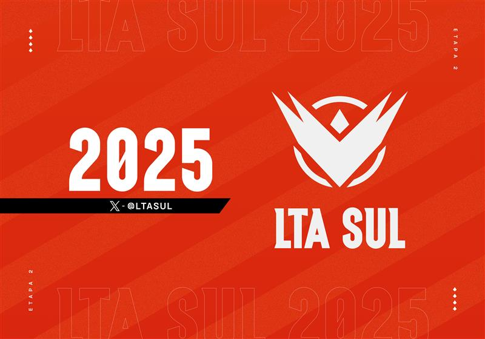
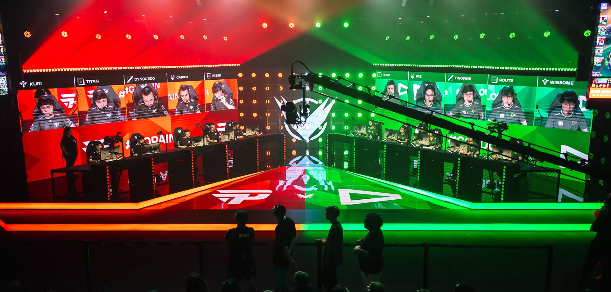

Bem-vindo!
Este site apresenta informações sobre duas das maiores organizações de League of Legends do Brasil: paiN Gaming e LOUD.
League of Legends como Esporte Eletrônico
League of Legends, também conhecido como LoL, é um dos jogos mais populares do mundo no cenário competitivo. Criado pela Riot Games, o jogo movimenta uma enorme comunidade global e possui ligas profissionais em diversos países, incluindo o CBLOL no Brasil. As competições de LoL combinam estratégia, trabalho em equipe e habilidades mecânicas, atraindo milhões de espectadores ao redor do mundo todos os anos.
Últimos Confrontos entre paiN Gaming e LOUD (2025)
Em 2025, a rivalidade entre paiN Gaming e LOUD continuou intensa, com confrontos decisivos nos playoffs das duas etapas do campeonato.
-
📅 25 de janeiro de 2025 – LTA South Split 1 (Playoffs)
Resultado: paiN Gaming 2 – 1 LOUD
Resumo: A LOUD venceu o primeiro jogo, mas a paiN Gaming virou a série com duas vitórias sólidas. -
📅 6 de abril de 2025 – LTA South Split 2 (Playoffs)
Resultado: paiN Gaming 1 – 0 LOUD
Resumo: A paiN Gaming dominou o confronto direto, garantindo mais uma vitória sobre a rival. -
📅 24 de maio de 2025 – LTA South Split 2 (Playoffs – Série MD5)
Resultado: paiN Gaming 3 – 1 LOUD
Resumo: Em uma série melhor de cinco, a paiN Gaming superou a LOUD com desempenho superior em três jogos.
Histórico recente: Nos últimos 7 confrontos, a paiN venceu 6 e a LOUD apenas 1, mostrando um domínio recente da equipe tradicional sobre a atual campeã de torcidas.